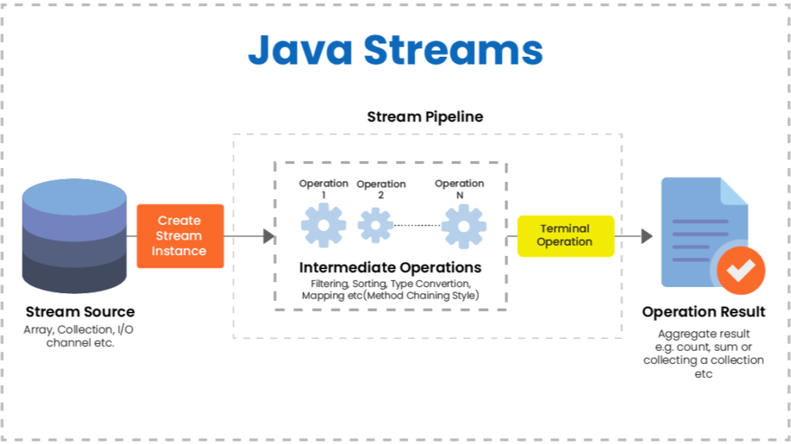

What's stream API
Streams: A stream is a sequence of elements that can be processed in parallel or sequentially.
It does not store elements; instead, it operates on data from a source (like a collection, array, or I/O channel).
Functional Operations:
Stream operations are usually chained together and are either intermediate (like map, filter, and sorted) or terminal (like collect, forEach, and reduce).This is the content for Slide 1. More details can be added here.
Why Use Stream API?
- Conciseness: Stream operations often require less code than traditional loops, making the code easier to read and maintain.
- Functional Programming: It encourages a functional programming style, allowing you to write cleaner code by using lambdas and method references.
- Parallel Processing: Streams can easily be parallelized with minimal changes to your code (using parallelStream()), which can lead to performance improvements in multi-core environments.
- Lazy Evaluation: Streams are lazy; operations are not executed until a terminal operation is called. This can lead to performance optimizations.
This is the content for Slide 2. More details can be added here.
When to use Stream API?
-
Data Transformation: When you need to transform collections, such as converting a list of objects into a list of their properties.
Filtering Data: For selecting specific elements from a collection based on conditions.
Aggregating Data: When you need to calculate aggregates like sums, averages, or counts.
Sorting Collections: Stream API can be used to sort elements in a collection in a concise manner.
Working with I/O: You can also use streams for processing data from files or network sources.
This is the content for Slide 3. More details can be added here.
Questions
Solution 1: Implement the ComparableSolution 2: Use a custom Comparator in the Collections.sort() method to define sorting logic without modifying the Book class.
This is the content for Slide 4. More details can be added here.
Slide 5 Content
This is the content for Slide 5. More details can be added here.